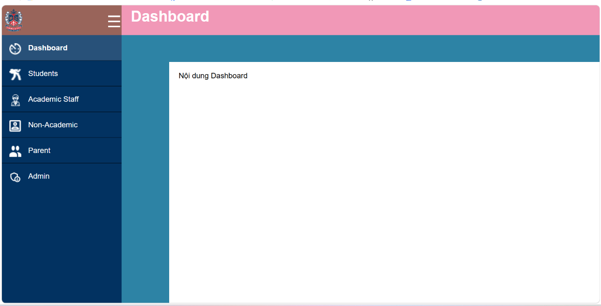
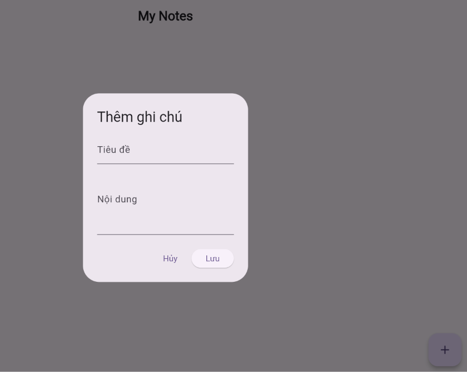
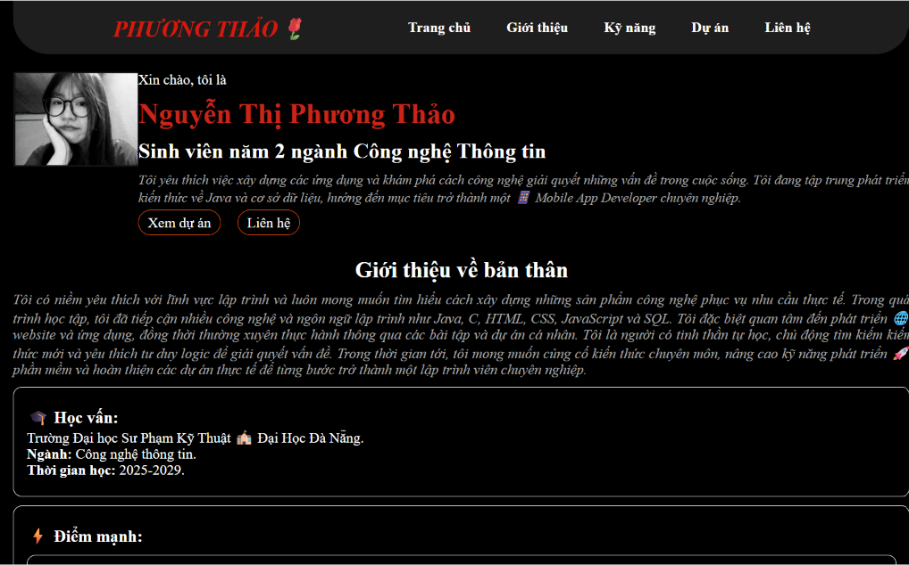

Sinh viên năm đầu ngành Công nghệ thông tin
Đại học Sư phạm Kỹ thuật –Đại học Đà Nẵng
Theo học các kiến thức nền tảng về lập trình C, cơ sở dữ liệu, cấu trúc dữ liệu và giải thuật, mạng máy tính, cấu trúc máy tính,..
Xin chào, tôi là
Tôi yêu thích việc xây dựng các ứng dụng và khám phá cách công nghệ giải quyết những vấn đề trong cuộc sống. Tôi đang tập trung phát triển kiến thức về Java và cơ sở dữ liệu, hướng đến mục tiêu trở thành một 📱 Mobile App Developer chuyên nghiệp.
Tôi có niềm yêu thích với lĩnh vực lập trình và luôn mong muốn tìm hiểu cách xây dựng những sản phẩm công nghệ phục vụ nhu cầu thực tế. Trong quá trình học tập, tôi đã tiếp cận nhiều công nghệ và ngôn ngữ lập trình như Java, C, HTML, CSS, JavaScript và SQL. Tôi đặc biệt quan tâm đến phát triển 🌐 website và ứng dụng, đồng thời thường xuyên thực hành thông qua các bài tập và dự án cá nhân. Tôi là người có tinh thần tự học, chủ động tìm kiếm kiến thức mới và yêu thích tư duy logic để giải quyết vấn đề. Trong thời gian tới, tôi mong muốn củng cố kiến thức chuyên môn, nâng cao kỹ năng phát triển 🚀 phần mềm và hoàn thiện các dự án thực tế để từng bước trở thành một lập trình viên chuyên nghiệp.
Trường Đại học Sư Phạm Kỹ Thuật 🏫 Đại Học Đà Nẵng.
Ngành: Công nghệ thông tin.
Thời gian học: 2025-2029.
Tư duy logic
Tinh thần tự học
Giải quyết vấn đề
Tinh thần trách nhiệm
Thiết kế cơ sở dữ liệu, truy vấn SQL, thao tác dữ liệu.
Quản lý mã nguồn, commit, push, pull, branch và merge.
Lập trình hướng đối tượng, Class, Inheritance, Encapsulation và ArrayList.
Xây dựng cấu trúc website - Thiết kế giao diện - Xử lý sự kiện hiệu quả.
Có khả năng phối hợp, phân chia công việc và trao đổi trong quá trình thực hiện dự án.
Chủ động tìm hiểu tài liệu và công nghệ mới để giải quyết vấn đề trong học tập.
Biết phân tích lỗi, tìm nguyên nhân và thử nghiệm phương án khắc phục.
Biết sắp xếp thứ tự ưu tiên và phân chia thời gian cho các nhiệm vụ.
Những dự án tôi đã thực hiện trong quá trình học tập, rèn luyện kỹ năng và phát triển bản thân.

HTML5 • CSS3 • JavaScript
Website hỗ trợ quản lý thông tin sinh viên một cách tập trung, khoa học với các tính năng thêm, sửa, xóa và tìm kiếm cơ bản.
Vai trò: Lập trình viên chính – thiết kế giao diện và lập trình chức năng.

Flutter • Dart
Ứng dụng giúp người dùng ghi chú nhanh, phân loại và quản lý các công việc hàng ngày một cách trực quan, thuận tiện.
Vai trò: Xây dựng giao diện ứng dụng.

HTML5 • CSS3 • JavaScript
Website Portfolio cá nhân nhằm giới thiệu thông tin, học vấn, kỹ năng và các dự án đã thực hiện với giao diện tương thích đa thiết bị.
Vai trò: Lập trình viên chính – thiết kế bố cục và lập trình toàn bộ.
Theo học các kiến thức nền tảng về lập trình C, cơ sở dữ liệu, cấu trúc dữ liệu và giải thuật, mạng máy tính, cấu trúc máy tính,..
Từng bước xây dựng tư duy lập trình và kiến thức chuyên môn trong lĩnh vực Công nghệ thông tin.
Vận dụng kiến thức đã học để xây dựng website Portfolio cá nhân và các sản phẩm thực hành lập trình. Qua đó rèn luyện khả năng thiết kế giao diện, tổ chức mã nguồn và giải quyết vấn đề trong quá trình phát triển phần mềm.
Hồ sơ cá nhân